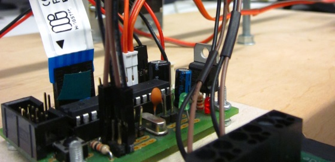

Referenz

class maze.Maze
Eine abstrakte Darstellung eines Labyrinths als rechteckiger, einfacher Graph.
__init__(width, height)
Erstellt eine neue Instanz der Maze Klasse.
Argumente
Siehe Eigenschaften.
Beispiel
m = Maze(5, 3)
print m
# Output:
#
# +--+--+--+--+--+
# | | | | | |
# +--+--+--+--+--+
# | | | | | |
# +--+--+--+--+--+
# | | | | | |
# +--+--+--+--+--+
width
Die Breite des Labyrinths
height
Die Höhe des Labyrinths
add_edge(v1, v2)
Fügt eine Kante zwischen den Punkten v1 und v2 hinzu, wobei ein Punkt ein Tupel aus zwei int zwischen 1 und width bzw. height ist. Liegt v1 oder v2 nicht auf dem Graph, oder liegen v1 und v2 nicht nebeneinander, so wird der Befehl ignoriert.
Beispiel
m = Maze(5, 3)
m.add_edge((1, 1), (1, 2))
print m
# Output:
#
# +--+--+--+--+--+
# | | | | | |
# + +--+--+--+--+
# | | | | | |
# +--+--+--+--+--+
# | | | | | |
# +--+--+--+--+--+
add_path(path)
Fügt Kanten entlang des Pfades path.
Argumente
path:
Eine Liste von Punkten.
Beispiel
m = Maze(5, 3)
m.add_path([(1, 1), (1, 2), (2, 2), (3, 2), (5, 3), (5, 2)])
print m
# Output:
#
# +--+--+--+--+--+
# | | | | | |
# + +--+--+--+--+
# | | | |
# +--+--+--+--+ +
# | | | | | |
# +--+--+--+--+--+
bfs(start, end)
Führt eine Breitensuche aus und gibt den kürzesten Pfad vom Punkt start nach end zurück. Ist end von start aus nicht erreichbar, so wird eine leere Liste zurückgegeben.
get_neighbors(x, y)
Gibt eine Liste von allen Punkten auf dem Graphen zurück, die genau Manhattan-Distanz 1 vom Punkt (x, y) entfernt sind. Ist (x, y) nicht auf dem Graph, so wird eine leere Liste zurückgegeben.
get_reachables(x, y)
Gibt eine Liste von allen Punkten v in get_neighbors(x, y) zurück, die eine Kante nach (x, y) haben.
get_skippables(path)
Gibt eine Liste von allen Indizes i zurück, so dass [path[i - 1], path[i], path[i + 1]] eine gerade Strecke bildet.
Argumente
path:
Eine Liste von Punkten.
Beispiel
path = [(1, 1), (1, 2), (1, 3), (2, 3), (3, 3), (4, 3), (5, 3)]
m = Maze(5, 3)
m.add_path(path)
skippables = m.get_skippables(path)
print skippables
print m.print_path([], [path[i] for i in skippables])
# Output:
#
# [1, 3, 4, 5]
# +--+--+--+--+--+
# | | | | | |
# + +--+--+--+--+
# | #| | | | |
# + +--+--+--+--+
# | # # # |
# +--+--+--+--+--+
has_vertex(x, y)
Gibt ein bool zurück, ob sich der Punkt (x, y) auf dem Graph befindet, oder nicht.
has_edge(v1, v2)
Gibt ein bool zurück, ob die Punkte v1 und v2 mit einer Kante verbunden sind, oder nicht.
print_path(path, marks = [])
Gibt ein string zurück, das das Labyrinth und den angegebenen Pfad path repräsentiert.
Argumente
path:
Eine Liste von Punkten. Punkte in path werden mit einem x markiert. Der letzte Punkt wird mit einem (X markiert.
marks:
Eine Liste von Punkten. Punkte in marks werden mit einem # markiert.
parse(string)
Liest die gegebene string Darstellung eines Labyrinths und fügt bzw. entfernt Kanten, so dass das Objekt die Darstellung entspricht.
Beispiel
m = Maze(1, 1).parse(\
"""+--+--+--+--+--+--+--+
| | |
+ +--+ + + +--+ +
| | | | | |
+ + + + +--+ +--+
| | | | |
+--+--+--+--+--+--+--+""")
print m
# Output:
#
# +--+--+--+--+--+--+--+
# | | |
# + +--+ + + +--+ +
# | | | | | |
# + + + + +--+ +--+
# | | | | |
# +--+--+--+--+--+--+--+
class balancer.Balancer
Die Schnittstelle zwischen dem Balancierer und Python. Implementiert das Kommunikationsprotokoll.
__init__(serial, width = 580, height = 580, padding = 25)
Erstellt eine neue Instanz der Balancer Klasse.
Argumente
serial:
Eine serial.Serial Klasse, die der Kommunikation dient.
width:
Die Breite des Touchscreens.
height:
Die Höhe des Touchscreens.
padding:
Der Abstand vom Rand, der nicht ansteuerbar ist.
Beispiel
balancer = Balancer(serial.Serial(0))
balancer.serial.close()
with Balancer(serial.Serial(0)) as balancer:
# do things
pass
serial
Die serial.Serial Klasse, die im Konstruktor übergeben wurde.
width
Die Breite des Touchscreens. Standard: 580
height
Die Höhe des Touchscreens. Standard: 580
padding
Der Abstand vom Rand, der nicht ansteuerbar ist. Standard: 25
command_queue
Eine Liste von Befehlen, die nacheinander bei der Ausführung von start_listening() versendet werden. Ein Befehl wird in einem Tupel (force_reset, t, u) gespeichert, bestehend aus einem bool und zwei int, wobei t die x-Koordinate und u die y-Koordinate bezeichnen. force_reset gibt an, ob die Servomotoren auf den Anfangswerten zurückgesetzt werden soll.
command = (False, 25, 100) # entspricht dem Befehl ".025,100"
command = (True, 290, 290) # entspricht dem Befehl "!290,290"
Standard: []
response_handler
Eine Funktion, die ausgeführt wird, wann immer start_listening() ausgeführt wird und Balancer eine Antwort vom Balancierer bekommt. Die Funktion soll der Form response_handler(destination, response) sein, wobei destination = (t, u) der Zielpunkt des aktuellen Befehls und response = (balanced, t, u) die Antwort ist, bestehend aus einem bool balanced und zwei ints.
response = (True, 25, 100) # entspricht der Antwort "=025,100"
response = (False, 290, 290) # entspricht der Antwort ":290,290"
Standard: None
balance_handler
Eine Funktion, die ausgeführt wird, wann immer start_listening() ausgeführt wird und die Kugel sich balanciert hat. Die Funktion soll der Form balance_handler(destination, response, destination_reached) sein, wobei destination und response wie in response_handler definiert ist und destination_reached ein bool ist, der angibt, ob die Kugel destination schon erreicht hat oder nicht, siehe destination_reached Eigenschaft.
Standard: None
destination_reached
Eine Funktion der Form destination_reached(dest, coord) die ein bool zurückgibt, das bestimmt, ob der angegebene Koordinatenpunkt coord die Zielkoordinate dest erreicht hat, oder nicht.
Standard: lambda dest, coord: self.distance(dest, coord) < 27
add_command(t, u, force_reset = False)
Fügt ein Befehl der Form (force_reset, t, u) zur command_queue hinzu.
Argumente
t:
Ein int zwischen 0 und width. Die x-Koordinate des Zielpunkts auf dem Touchscreen, die die Kugel ansteuern soll.
u:
Ein int zwischen 0 und height. Die y-Koordinate des Zielpunkts auf dem Touchscreen, die die Kugel ansteuern soll.
force_reset:
Ein bool, der angibt, ob die Servomotoren auf ihre Anfangswerten zurückgesetzt werden soll oder nicht.
start_listening()
Verarbeitet die Befehle in command_queue und ruft response_handler bzw. balance_handler in den passenden Situationen auf.
Beispiel
with Balancer(Serial(0)) as balancer:
def balance_handler(destination, response, destination_reached):
if destination_reached: return
balancer.add_command(290, 290)
balancer.balance_handler = balance_handler
balancer.add_command(290, 290)
balancer.start_listening()
distance(coord1, coord2)
Berechnet die Tschebyschew-Distanz, die von der Maximumsnorm induzierte Metrik, zwischen den angegebenen Punkten und gibt diese als int zurück.
Argumente
coord1, coord2:
Ein Tupel (t, u) aus zwei int.
Beispiel
balancer = Balancer(Serial(0))
distance = balancer.distance((100, 25), (0, 0)) # ergibt 100
main.py
to_touchscreen_coord(maze, balancer, vertex)
Gibt die entsprechenden Touchscreen-Koordinaten zum gegebenen Punkt vertex im Labyrinth maze zurück.
to_vertex(maze, balancer, coord)
Gibt den geschätzten Punkt im Labyrinth maze zum gegebenen Touchscreen-Koordinaten coord zurück.
run(path, maze)
Bringt die Kugel dazu, den angegebenen Pfad im Labyrinth maze zu durchlaufen, wobei wir die Indizes in m.get_skippables(path) überspringen.
Beispiel
run([(1, 1), (1, 2), (1, 3)], m)
Dieses Beispiel balanciert die Kugel zunächst auf dem Feld (1, 1) aus, und anschließend auf (1, 3).
detect_maze(vertex, width, height)
Versucht das Labyrinth mit der angegebenen Größe zu erkennen. Die Kugel soll auf dem angegebenen Punkt vertex im Labyrinth gesetzt werden.
estimate_current_vertex(width, height)
Versucht die aktuelle Position der Kugel in einem Labyrinth der angegebenen Größe zu bestimmen.
Beispiel
# Find nearest vertex to begin with
start = estimate_current_vertex(5, 3)
m = detect_maze(start, 5, 3)
print 'Maze detected!'